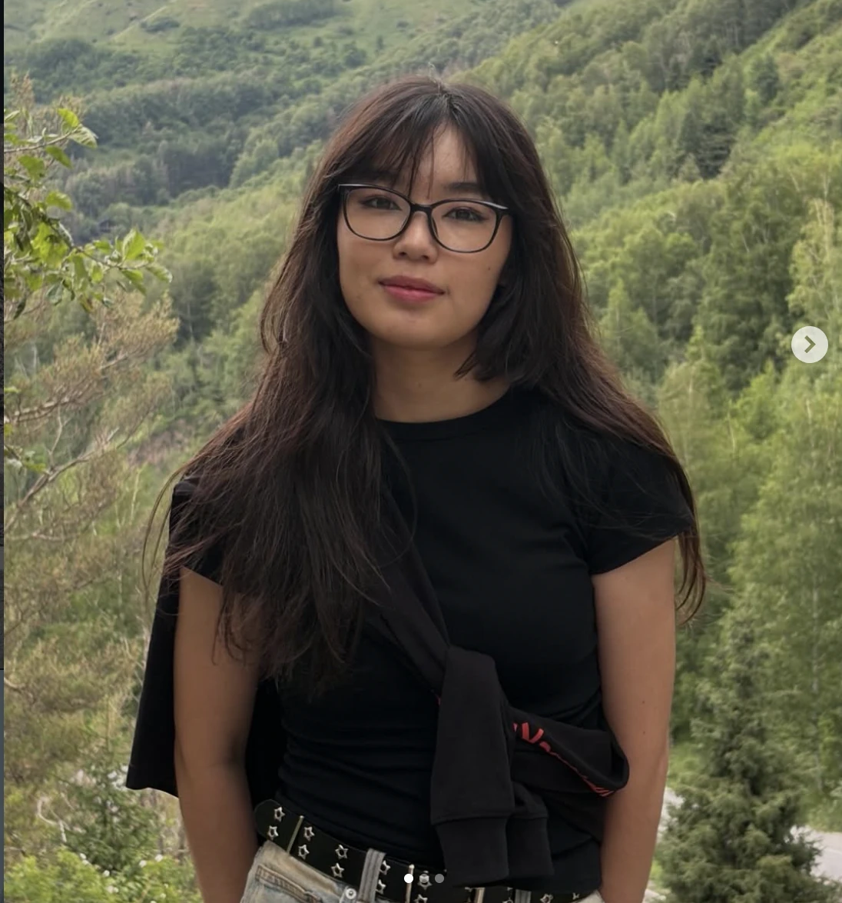

01 / colour energy
LOUD
ON PURPOSE
Available for freelance & part-time · Astana, Kazakhstan · Remote
Graphic designer creating bold identities, campaigns, posters and editorial work with a point of view.
( selected work )
2024—2026
Selected identities, campaigns, posters and editorial design. Five projects, different points of view.
I turn “what if?” into visuals that make you look twice.
I’m Ақбөпе, an Astana-based graphic designer and Software Engineering student at Astana IT University. I create visual identities, campaigns, posters and editorial work through expressive typography, unexpected colour and playful composition.

Visual identity · Typography · Colour systems
Art direction · Posters · Editorial · Social content
( what i can make )
always learning, always up for a new challenge
Visual identities · Logo systems · Typography & colour · Packaging
Campaign concepts · Posters · Social media · Digital ads
Editorial systems · Posters · Typography · Print graphics
( my design ingredients )
made for looking twice
01 / colour energy
02 / type mood
BIG03 / design soundtrack
PLAY( have an idea? )
Available for freelance projects, part-time roles & creative collaborations.
Astana, Kazakhstan · Remote